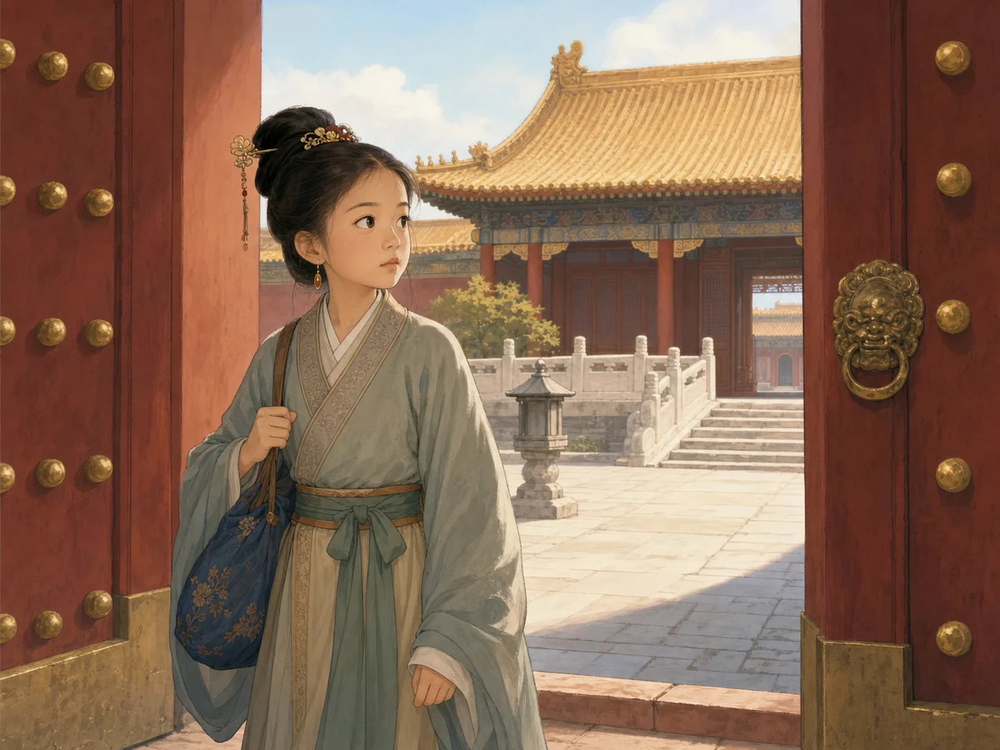

同一个武则天，为什么让史书既佩服又害怕？
Why Do the Histories Show Both Skill and Fear in Wu Zetian?
阅读难度 · 困难Reading level · Hard
Page 1
先别急着选“能干女皇”或“可怕妖后”
Do Not Rush to Choose “Capable Emperor” or “Cruel Monster”

This is modern fantasy, not a historical portrait of Wu Zetian or a reconstruction of a Tang court audience. Its throne, clothing, official hats, and hall mix later styles and cannot show what her enthronement really looked like.
如果一本书说武则天聪明、会用人，另一本书又说她让朝廷充满恐惧，哪一本才是真的？也许答案不是二选一。
武则天生活在624年至705年，690年至705年以“皇帝”名号统治她建立的周政权。中国历史上还有吕后、慈禧太后等掌握巨大权力的女性，也有代年幼皇帝摄政的太后；武则天的独特之处，是她正式改国号、使用皇帝称号，以最高君主身份在位。称她为“中国唯一正式以皇帝名号统治的女性”比较准确，称她为“中国唯一的女性统治者”就太宽了。
我们今天主要依靠诏令、碑刻、墓葬、佛教造像，以及后来编成的《旧唐书》《新唐书》《资治通鉴》等材料认识她。后三部书都很重要，却在武则天去世后才编成；作者还要讨论谁有资格称帝、女人应处在什么位置。读这些史书，既不能把每段宫廷故事当摄像记录，也不能因为其中有性别偏见，就假定所有批评都是假的。
Suppose one book calls Wu Zetian intelligent and skilled at choosing officials, while another says she filled the court with fear. Which book is true? The answer may not be one or the other.
Wu lived from 624 to 705 and ruled the Zhou state she founded under the title of emperor from 690 to 705. Other women in Chinese history, including Empress Lü and Empress Dowager Cixi, held enormous power, and empress dowagers sometimes served as regents for young emperors. Wu's unique step was to change the dynastic name and formally reign as the supreme sovereign with the title emperor. Calling her “the only woman in Chinese history to rule formally with the title of emperor” is precise. Calling her “China's only woman ruler” is much too broad.
Today we know her through edicts, inscriptions, tombs, Buddhist sculptures, and later works such as the Old Book of Tang, New Book of Tang, and Comprehensive Mirror for Aid in Government. Those histories are essential, but all were compiled after Wu died. Their authors also cared deeply about who had the right to be emperor and where women belonged. We should not treat every palace story as camera footage. Yet we should not decide that every criticism is false simply because the histories contain gender bias.
Page 2
从十四岁入宫到成为皇后，确定的年代不等于确定的密室故事
Firm Dates Do Not Make Every Palace Story Certain

This is a modern imagined palace entrance, not a portrait of Wu at fourteen. The gate, buildings, jewelry, and dress are not a reconstruction of one site in 637 or 638.
《旧唐书》说，武氏十四岁时被唐太宗召入宫，成为品级不高的“才人”。按她约624年的出生年推算，这大约在637或638年。我们不知道她进门时说了什么，也没有证据证明她那几年一直偷偷学习奏折和官员分工。她在太宗朝没有留下显著政治活动的记录。
649年太宗去世后，她到感业寺为尼；五十年代初，她进入太宗之子唐高宗的后宫。655年，王皇后被废，武氏成为皇后。这些转折有纪年材料支持，可是内廷究竟发生了什么就难得多。后来史书写到武氏的幼女突然死亡，并逐渐发展出她亲手杀女、嫁祸王皇后的叙述；较早记录没有提供现场证人或可以检验的死因，王皇后正式被废的罪名也不只这一件事。
所以，这桩婴儿死亡不能写成武则天掐住孩子的小说场景，也不能轻率宣布完全不可能。我们能说的是：孩子确实夭折，政治斗争确实紧接着加剧，而“母亲亲手杀女”是后世史书中的严重指控，不是已经由法医证据解决的案件。
The Old Book of Tang says that the fourteen-year-old Lady Wu entered Emperor Taizong's palace as a cairen, a relatively low-ranking consort. Based on her approximate birth year of 624, this happened around 637 or 638. We do not know what she said at the gate, and no evidence shows that she spent those years secretly studying memorials and every official's duties. The records do not give her a major political role during Taizong's reign.
After Taizong died in 649, she became a Buddhist nun at Ganye Temple. In the early 650s, she entered the household of Taizong's son, Emperor Gaozong. In 655, Empress Wang was removed and Lady Wu became empress. Chronological sources support these turns, but private palace events are far harder to recover. Later histories describe the sudden death of Wu's infant daughter and gradually develop the accusation that Wu killed the child herself to frame Empress Wang. Earlier records provide neither an eyewitness nor a cause of death that can now be tested, and Wang's formal removal involved more than this one accusation.
We should therefore never stage the baby's death like a novel, with Wu's hands around her child. Nor can we casually declare the accusation impossible. What we can say is that the baby died, the political struggle soon intensified, and “the mother killed her own daughter” is a grave charge in later histories - not a case solved by forensic evidence.
Page 3
寺门打开以后，她不是一步跳上皇位
When the Temple Gate Opened, She Did Not Leap Straight to the Throne

This modern imagined temple and carriage are not an eyewitness view of Ganye Temple or Wu's departure. Later accounts differ on exactly how she returned and what part Empress Wang played.
从寺院回宫以后，武氏先成为高宗的妃嫔，再成为皇后。高宗六十年代起健康反复出现问题，她更深地参与阅览奏章和处理政务。674年，两人分别使用“天皇”和“天后”的称号，当时也被称作“二圣”。这不是说高宗从此完全没有权力，而是说明武后已成为朝廷决策的重要中心。
683年高宗去世。儿子中宗即位不久便在684年被她废黜，另一子睿宗登位，武太后以摄政者身份掌权。690年，她让睿宗退位，改唐为周，以“圣神皇帝”名义正式称帝。这个“周”借用了古代周王朝和她武氏家族祖先叙事的威望，通常称“武周”，存在到705年，并不是公元前十一世纪开始的那个周朝突然复活。
705年，年老患病的武则天在宫廷政变后把皇位传给中宗，唐国号恢复。她同年去世。她不是在临终前平静地“主动把天下还给李家”；退位是在武装压力下发生的。能力很强的统治者也会失去控制，朝代名称的恢复也不能抹去她十五年正式称帝和此前长期掌权的事实。
After returning from the temple, Lady Wu first became Gaozong's consort and then his empress. Gaozong suffered recurring health problems from the 660s onward, and she became more deeply involved in reading memorials and managing state business. In 674 they adopted the titles “Heavenly Emperor” and “Heavenly Empress” and were sometimes called the “Two Sages.” This does not mean Gaozong had no power from then on. It shows that Empress Wu had become a major center of court decision-making.
Gaozong died in 683. Their son Zhongzong took the throne but was removed by his mother in 684. Another son, Ruizong, became emperor while Empress Dowager Wu ruled as regent. In 690, she had Ruizong yield the throne, replaced Tang with Zhou, and formally became emperor under the title “Sacred and Divine Emperor.” Her Zhou borrowed prestige from the ancient Zhou dynasty and from a claimed ancestral story for the Wu family. Usually called Wu Zhou, it lasted until 705. It was not the ancient Zhou dynasty of the first millennium BCE suddenly coming back to life.
In 705, while old and ill, Wu yielded the throne to Zhongzong after a palace coup, and the Tang name returned. She died later that year. She did not calmly “give the realm back to the Li family” as a free final choice; armed pressure forced her abdication. Even a highly capable ruler can lose control, and restoring the old dynastic name cannot erase her fifteen years as formal emperor or her long power before that.
Page 4
她扩大选才的门，却没有发明科举或消灭门第
She Widened Paths to Office but Did Not Invent the Exams
武则天为什么能让一些史家承认她“内辅时政，厥功茂矣”？一个原因是她会寻找能办事的人。科举的根源早在隋代，唐初已经实行，绝不是武则天一个人发明的。她继续扩大考试、荐举和官员自荐等渠道，也增加通过不同方式被看见的人。狄仁杰、姚崇等能臣曾在她统治时期担任要职；她也能撤换、再起用曾经得罪自己的人。
不过，“任人唯贤”不能讲成所有平民从此公平竞争。备考需要教育、时间和关系，唐代官员仍大量来自有资源的家族；研究者对武则天究竟多大程度改变了官僚阶层，还有争论。她增加机会，也任用武氏亲族、宠臣和为她服务的酷吏。选才制度既能发现人才，也能用来建立忠于新统治者的队伍。
洛阳在她的政治中格外重要。她把那里称为“神都”，建造明堂，用礼仪、建筑和新称号展示周政权的中心。明堂既是举行国家仪式的宏大建筑，也是把政治秩序演给人看的舞台。评价行政能力时，要看任命、赈济、战争与地方治理等具体记录；不能仅凭一座壮观建筑就宣布全国人人安居乐业。
Why did even some critical historians admit that Wu made important contributions while assisting government? One reason was her ability to find people who could do difficult work. The civil service examinations had roots in the Sui and were already used in the early Tang. Wu did not invent them. She continued to expand examinations, recommendations, and routes for officials to put themselves forward, allowing a wider range of candidates to become visible. Capable officials such as Di Renjie and Yao Chong held important posts under her, and she could dismiss and later recall someone who had displeased her.
Yet “choosing by talent” did not suddenly give every commoner an equal chance. Preparing for examinations required education, time, and connections, and many Tang officials still came from families with substantial resources. Scholars continue to debate how deeply Wu changed the official class. She opened opportunities, but she also promoted members of the Wu clan, favorites, and cruel officials who served her political needs. A selection system can discover talent and build a team loyal to a new ruler at the same time.
Luoyang held special importance in her politics. She called it the “Divine Capital” and built the Mingtang, using ritual, architecture, and new titles to display the center of Zhou rule. The great hall served both as a site for state ceremony and as a stage on which political order became visible. To judge administrative ability, we need concrete records of appointments, relief, warfare, and local government. One magnificent building cannot prove that everyone across the empire lived well.
Page 5
《大云经》、明堂和佛像都在回答：女人凭什么称帝？
Sutras, Halls, and Buddhas Answered: How Could a Woman Be Emperor?
皇帝不只要掌握军队和官员，还要让人相信自己“应该”统治。儒家政治习惯把君位和男性家族继承连在一起，武则天需要别的语言。690年前后，僧人撰成并呈上《大云经疏》，利用《大云经》中女性转生、成为统治者的内容解释她受命称帝。朝廷把文本颁行各州，并设置大云寺。佛教信仰、国家资助和政治宣传在这里交织，不能把经书说成一封从天而降的“女皇任命书”。
她也大力支持佛教建筑和造像。洛阳龙门奉先寺的大型造像群完成于高宗与武后共同掌权时期，铭刻和研究支持皇家夫妇参与赞助。流行故事常说中央卢舍那佛完全照武则天的脸雕成，可是没有可靠同时代文字记录它的五官以她为模特。更谨慎的说法是：宏伟佛像、女性皇权和洛阳政治在后人的观看中彼此联系，但“这就是她的石头肖像”仍是一种解释。
这不表示她只“假装信佛”。统治者可以真诚信仰，也可以利用宗教建立合法性，两件事能够同时发生。重要的问题不是猜她心里到底信几分，而是看朝廷怎样花钱、颁布文本、建寺和安排礼仪。
An emperor needed more than control over armies and officials. People also had to believe that the ruler ought to rule. Confucian political custom tied the throne to male family succession, so Wu needed other languages of legitimacy. Around 690, monks composed and presented a commentary on the Great Cloud Sutra. They used its story of a female figure becoming a ruler in another life to explain that Wu had received a sacred mandate. The court distributed the text and ordered Great Cloud Temples established in the prefectures. Buddhist belief, state support, and political propaganda met here. The sutra was not a letter dropped from heaven appointing a woman emperor.
Wu also strongly supported Buddhist buildings and images. The monumental Fengxian Temple group at Longmen near Luoyang was completed while Gaozong and Empress Wu shared power, and inscriptions and scholarship support their royal patronage. A popular story says the central Vairocana Buddha was carved to look exactly like Wu. No dependable contemporary text states that its facial features were modeled on hers. A more careful reading connects monumental Buddhist imagery, female sovereignty, and Luoyang politics while leaving “this is her stone portrait” as an interpretation.
None of this means Wu merely pretended to believe. A ruler can hold sincere faith and use religion to establish legitimacy at the same time. Instead of guessing how much belief was in her heart, we can examine what the court funded, distributed, built, and performed.
Page 6
铜匦既能收意见，也能把怀疑变成恐惧
The Petition Boxes Could Hear Grievances - and Feed Fear
686年，武太后在朝堂设置铜匦，让人递送自荐、劝谏、申冤和秘密报告。它不只是“告密箱”：在普通人很难接近最高统治者的时代，投匦确实可能绕过地方官，让意见或冤情上达。但同一条通道也接收政治指控。朝廷奖励某些告发者，酷吏周兴、来俊臣等负责审讯，刑讯逼供、牵连和秘密案件破坏了原有司法程序。
早期纪年材料记录了李唐宗室、反对者和被怀疑官员遭处决、流放及家族牵连。688年越王李贞等反抗后，镇压与清洗尤其严厉；连曾被她任用的高级官员也可能突然被杀。后来的史书可能用“母鸡报晓”等贬低女性掌权的语言，把她写得比男性君主更像怪物；可法律制度研究和具体人名、判决记录说明，酷吏政治与真实受害者不能被解释成纯粹的厌女造谣。
武则天后来也处死或清除一些酷吏，并接受大臣为个别案件求情。这显示酷吏不是永远不受控制，却不能抵消她先前允许这套系统发展。一个统治者能提拔贤臣，也能利用恐惧巩固权力；把前者写出来不是洗白，把后者写出来也不必编造私密暴行。
In 686, Empress Dowager Wu placed bronze petition boxes at court so people could submit applications, advice, grievances, and secret reports. They were not only “snitch boxes.” At a time when ordinary people could rarely reach the highest ruler, a box might bypass local officials and carry a proposal or injustice upward. But the same route also received political accusations. The court rewarded some informers, while cruel officials such as Zhou Xing and Lai Junchen led interrogations. Torture, forced implication of others, and secret cases damaged established legal procedures.
Early chronological sources record executions, exile, and punishment of relatives among the Tang royal clan, opponents, and suspected officials. After Prince Li Zhen and others rebelled in 688, suppression and purges became especially severe. Even senior officials once appointed by Wu could suddenly be killed. Later historians sometimes used gendered insults - such as comparing female rule to a hen announcing the dawn - and portrayed her as more monstrous than male emperors. Yet legal history, together with records of named victims and judgments, shows that cruel-official politics cannot be dismissed as nothing but misogynistic invention.
Wu later executed or removed some cruel officials and sometimes accepted ministers' appeals in individual cases. That shows the officials were not always beyond control, but it does not cancel her earlier permission for the system to grow. One ruler can promote excellent ministers and use fear to secure power. Writing about the first is not whitewashing; writing about the second does not require inventing private crimes.
Page 7
无字碑没有替我们写下答案
The Wordless Stele Does Not Give Us the Answer
武则天死后与高宗合葬乾陵。她墓道附近立着两块相对的大碑：高宗的碑刻有长篇文字，武则天一侧的碑原本没有为她写好的颂文，后世却陆续刻上题记。今天常听到“她功过太大，所以留给后人评价”或“她自知罪过，无法下笔”等解释，但没有同时代材料告诉我们她亲自下令留白，更没有一种解释已经成为定论。连“无字”也有一段后来不断添字的历史。
这块碑提醒小禾：沉默不是想说什么就能填什么的空格。面对武则天，我们能确定正式称帝、制度、建筑、诏令、处决和退位等许多事件；面对密室中的死亡、人物动机和碑为何空白，则必须标出史料层次与不确定性。
同一个武则天为什么让史书既佩服又害怕？因为她突破了只有男人能正式称帝的政治边界，也展现了选用官员和管理朝廷的能力；她又通过清洗、告密和酷吏制造了真正的伤害。后世性别观念放大、改写了部分叙述，却没有把所有矛盾凭空创造出来。她不是励志海报，也不是恐怖故事里的妖怪，而是一位必须连同能力、暴力和证据一起研究的皇帝。
After Wu's death, she was buried with Gaozong at Qianling. Two great steles face each other near the tomb approach. Gaozong's bears a long inscription. The stele on Wu's side originally had no prepared tribute to her, although later visitors carved words onto it. People now say, “Her achievements and faults were too great, so she left judgment to the future,” or “She knew her crimes and could write nothing.” No contemporary evidence tells us that Wu personally ordered the blank, and no single explanation has been proved. Even this “wordless” stone has a later history of accumulating words.
The stele reminds Xiaohe that silence is not an empty space we may fill with anything. We can establish many events in Wu's life: formal enthronement, institutions, buildings, edicts, executions, and abdication. For deaths inside private rooms, personal motives, and the reason a stele began blank, we must identify layers of sources and uncertainty.
Why, then, do the histories show both skill and fear? Wu broke the political boundary that reserved the formal title of emperor for men, and she demonstrated skill in selecting officials and managing a court. She also caused real harm through purges, informant systems, and cruel officials. Later ideas about gender magnified and reshaped parts of her story, but they did not invent every contradiction from nothing. She is neither an inspirational poster nor a monster from a horror tale. She is an emperor whose ability, violence, and evidence must be studied together.
小结：评价不是选边，而是给证据分量
In Summary: Judgment Means Weighing Evidence
从十四岁入宫、649年为尼、655年立后，到683年以后摄政、690年称帝，再到705年被迫退位，武则天的权力是几十年逐步形成的。她正式以皇帝身份建立武周，是中国历史上独一无二的女性皇帝，却不是唯一掌权的女性。
她扩展了若干选官途径，但没有发明科举；她借助佛教和洛阳建筑塑造合法性，却不能把每尊佛像都当作她的肖像；她面对带有厌女观念的后世史书，却也确实建立过使人恐惧的政治工具。成熟的历史阅读，不急着替她洗白或定罪，而是不断问：这句话来自什么时候？它有别的证据吗？我们应该相信到什么程度？
From entering the palace at fourteen, becoming a nun in 649 and empress in 655, through regency after 683, enthronement in 690, and forced abdication in 705, Wu built power over decades. She founded Wu Zhou and formally ruled as emperor, making her unique as China's woman emperor - but not the only woman ever to exercise rule.
She expanded some routes into office but did not invent the examination system. She used Buddhism and Luoyang's architecture to shape legitimacy, but not every Buddha is her portrait. Later histories judged her through misogynistic assumptions, yet she also created political tools that caused real fear. Mature historical reading does not rush to clear or condemn her. It keeps asking: When was this claim written? What other evidence supports it? How much confidence does it deserve?